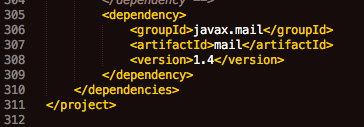

Overview
- Introduction
- Why another API?
- How does it work?
- Install in VIVO 1.10
- Install in VIVO 1.9
- Install in VIVO 1.8
- Configuration
- Implementations
- Cross-site distributions
- Javadoc
Project Documentation

Install the API in VIVO by following these steps:
In these instructions, {VIVO} and {Vitro} are used to indicate the paths to the directories of the VIVO distribution.
More details are in the sections below.
There are many <dependency> tags within the <dependencies> section of pom.xml. Add another dependency:
<!-- Data Distribution API -->
<dependency>
<groupId>edu.cornell.library.scholars</groupId>
<artifactId>DataDistributionAPI_VIVO_1.9</artifactId>
<version>1.0</version>
<type>jar</type>
</dependency>
There are no <repository> tags in pom.xml. Add one, telling Maven where to find the Data Distribution API:
<!-- Reference the repository for the Data Distribution API. -->
<repositories>
<repository>
<id>data-distribution-api</id>
<name>DataDistributionAPI</name>
<url>https://raw.github.com/j2blake/DataDistributionAPI_VIVO_1.9/mvn-repo/</url>
</repository>
</repositories>
Before editing, you might see this at the end of pom.xml:

After editing, you would see this:

You may have several files named web.xml in your project. Each tier overrides the previous tier, so:
Add a <servlet> tag and a <servlet-mapping> tag to associate the api/dataRequest with the DistributeDataApiController, like this:
<!-- Data Distribution API -->
<servlet>
<servlet-name>DistributeDataApi</servlet-name>
<servlet-class>edu.cornell.library.scholars.webapp.controller.api.DistributeDataApiController</servlet-class>
</servlet>
<!-- Data Distribution API -->
<servlet-mapping>
<servlet-name>DistributeDataApi</servlet-name>
<url-pattern>/api/dataRequest/*</url-pattern>
</servlet-mapping>
These tags can be placed anywhere among the other servlet-related tags.
Before editing, you might see this in web.xml:

After editing, you would see this:

Create a configuration file for the example distributor. The file will contain RDF data that tells the Data Distributor controller how to respond to requests. The file must be created in your VIVO distribution (or your third tier) in {VIVO}/home/src/main/resources/rdf/display/everytime.
For this example, create a file named HelloDistributorConfig.ttl:
@prefix : <http://vitro.mannlib.cornell.edu/ns/vitro/ApplicationSetup#> .
:data_distributor_hello
a <java:edu.cornell.library.scholars.webapp.controller.api.distribute.DataDistributor> ,
<java:edu.cornell.library.scholars.webapp.controller.api.distribute.examples.HelloDistributor> ;
:actionName "hello" .